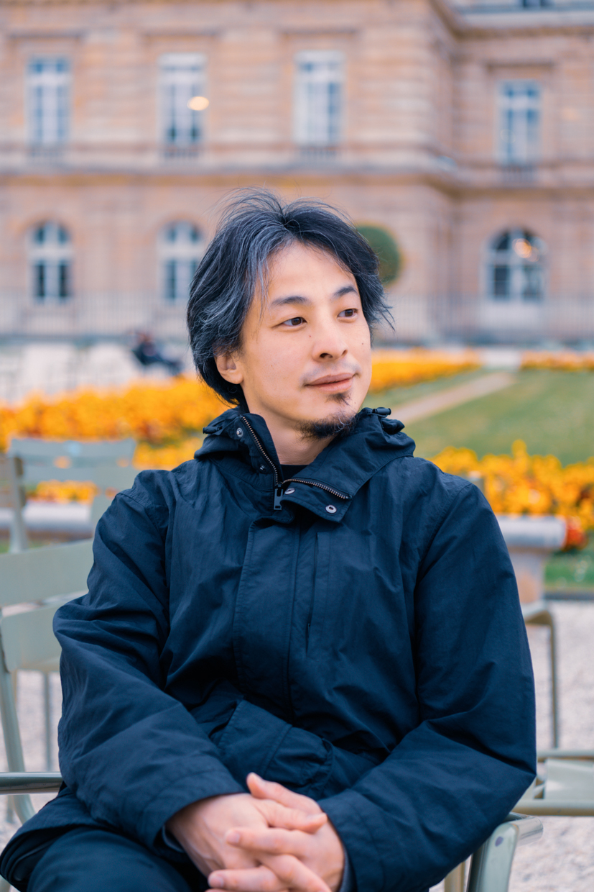
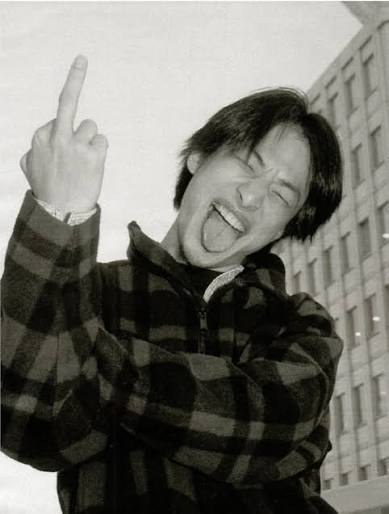

😎 こんにちは 😎
↓ トムとジェリー（粋な演出）

なぜひろゆきの画像を貼っているかというと、たいーにゃは、このようにHTML丸出しな昔ながらのホームページを見ると、なぜかひろゆきを思い出すからです。名前：たいーにゃ
好きな野菜：みょうが
😠：田村淳、佐藤勝利、松島聡、佐藤二朗、TAKA、藤井風、令和ロマンくるま、ムロツヨシ、福田雄一、DeNA南場、松丸りょうご、りゅうじ、カジサック、小栗旬、前田裕二、きまぐれクック などなど
インスタで流れてきたゲームが面白そうだったのにアプリを入れてみたら途中から有料だったから自分で作りました。でも、全部無料のやつ使ったからちゃんと読み込めなかったりします。
遊びたい方はこちらからどうぞ。
ワンピースの最終回について、ずっと前から友人たちに話しているのですが、文章にしないと後で言った言わないになりそうなので、ここに書いておきます。 まず、海賊王になるのは、バギーです。具体的には、ルフィと黒ひげが戦い、なんやかんやでルフィが勝ちます。 直後、新聞を書いてる鳥みたいなやつ（名前は忘れました）が倒れている黒ひげと、偶然そこに居合わせたバギーを見て、バギーが黒ひげを倒したと勘違いし、バギーを海賊王として世界中に報道します。 全てを知っているナミはルフィに対し、「あなたこれで良いの！？海賊王になるのが夢だったんじゃないの！」と言いますが、ルフィは「別にいいンだ🎶一番自由なやつが海賊王だ！」と言います。 時が飛んで10年後、土管の上に座るウソップが、3人の子供達を前に麦わらの一味とした冒険の一部始終を語りますが、子供達に嘘つき扱いされます。 そのやりとりを聞いていたルフィが子供達の後ろから「ニッシッシ（笑）」みたいな反応をして終わりです。
海底でしょうね。そこ（底）においてきたのでしょう。

若気の至り
来週の土曜のフットサル忘れないで